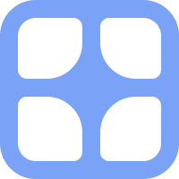

Greedy meshing
adjacent same-type voxels merge into larger quads instead of one part per cube
Octree spatial partitioning
fast neighbor lookups, LOD, and culling without scanning the whole chunk
Four query types
Box, Sphere, Region, and Raycast hitboxes, all backed by the same octree
Multithreaded voxelization
Relative controllers split grid classification across an Actor pool, not the main thread
One verb: Shatter
Hitbox, Effects, and Cleanup are all just config on the same call

Facet
A comprehensive voxel destruction library for Roblox.
One verb - Shatter - with Hitbox detection, Effects, and Cleanup all as config on the same call.
Facet voxelizes Roblox parts on demand. You Define a VoxelController (Relative or
Absolute), point it at a Host (or pass a Target per call), and Shatter it - optionally
scoped to a hitbox, with explosion/anchoring effects and a cleanup strategy (rebuild, fade,
destroy, or your own function), and a Result you can chain off of with :Next(Event):Then(cb).
Status: early. The public API -
Define,Host,RuntimeType(Instant/Timeline),Shatter'sHitbox/Effects/Cleanupconfig,Result.Voxels.Whole/Partial/Extra, and theEnums- is built and working end-to-end, with greedy meshing, an octree-backed spatial index over the candidate parts, and Actor-based multithreading for Relative controllers. All fourQueryTypes are wired up (Box/Sphere/Regionthrough the octree + an exact shape test,Raycaststraight through the engine - single closest hit, no multi-hit walk yet). The Actor pool (seesrc/VoxelController/Workers) is built against the documentedActor/SendMessage/BindToMessageParallelAPIs but hasn't been run against a real Studio session yet - it falls back to single-threaded voxelization automatically if the pool fails to start, so a surprise there costs speed, not correctness, but treat it as unverified until someone profiles it in Studio.
Features
- Two controller types -
Relative(dynamic sizing toward aRecommendedVoxelSize, falling back towardMinimumVoxelSize) orAbsolute(a fixedVoxelSize). - One verb, fully configurable -
Controller:Shatter(Target?, Config). OmitHitboxentirely to shatter the whole target; include it to scope detection, withHitboxType(Wholereturns a part untouched,Partialvoxelizes whatever's detected). - Greedy meshing - voxel cells produced outside the hitbox (
Result.Voxels.Extra) are merged dimension-by-dimension into the fewest boxes that cover them, instead of one part per grid cell. Cells you're meant to see fragment (Partial, or a no-hitboxShatter) stay one piece per cell. - Octree-backed spatial queries - candidate parts are indexed in a broad-phase octree
(
src/VoxelController/Octree.luau) before the exact shape test runs, so detection doesn't depend onCanQuery/CanCollideor the part living inworkspace. - Multithreaded slicing for Relative controllers - when a
Shattercall touches more than one part, each part's grid classification + greedy meshing runs on its own desynchronized Actor (src/VoxelController/Workers) instead of serially on the calling thread.Absolutecontrollers, and any call that only touches one part, skip the Actor round-trip entirely. - Four query types -
Enums.QueryType.Box/Sphere/Region/Raycast, set onHitbox.QueryType. - Three-way result split -
Result.Voxels.Whole/.Partial/.Extra, so you always know what was isolated whole, what got sliced, and what was produced but fell outside the hitbox. - Composable cleanup -
Enums.Cleanup.Rebuild/Fade/Destroy, or pass your ownfunction(voxel) ... end. - Two runtime modes -
Instantcontrollers run everyShattercall immediately;Timelinecontrollers queue calls until you callController:Start(). - Two ways to install - Wally for a Rojo workflow, or a single paste-into-the-command-bar installer with no toolchain at all.
Installation
Wally
# wally.toml
[dependencies]
Facet = "kr3ative/facet@0.1.0"
wally install
Command-bar install (no toolchain)
Bootstrap (recommended) - paste this one snippet into the Studio command bar; it fetches and runs the installer over HTTP (enable Game Settings → Security → Allow HTTP Requests):
local h = game:GetService("HttpService")
loadstring(h:GetAsync("https://raw.githubusercontent.com/mkl48/Facet/master/dist/install.luau"))()
(dist/bootstrap.luau is the same with error handling + a
no-loadstring fallback.) Or, offline, paste the whole dist/install.luau
directly. Either way it recreates the whole Facet tree under ReplicatedStorage.
Regenerate it from source any time with:
lune run scripts/build-installer
Quick start
local Facet = require(game.ReplicatedStorage.Facet)
local Enums = Facet.Enums
local Wall = Facet.Define({
Type = Enums.ControllerType.Absolute,
VoxelSize = 2,
Host = workspace.Wall,
})
Wall:Shatter({
Hitbox = {
Size = Vector3.new(4, 4, 4),
CFrame = impactCFrame,
HitboxType = Enums.HitboxType.Partial,
},
Effects = {
[Enums.Effects.Explode] = { Radius = 12 },
},
Cleanup = Enums.Cleanup.Fade,
}):Next(Enums.Event.NewVoxel):Then(function(result)
print(#result.Voxels.Partial, "voxels produced")
end)
See examples/server.server.luau for a fuller example wired
to a RemoteEvent.
Defining a controller
Facet.Define(config) builds a VoxelController and returns it - nothing runs until you call
:Shatter() on it. Two things decide how it sizes voxels:
-- Absolute: every voxel is exactly VoxelSize studs, regardless of part size.
local Wall = Facet.Define({
Type = Enums.ControllerType.Absolute,
VoxelSize = 2,
Host = workspace.Wall,
})
-- Relative: sizes toward RecommendedVoxelSize, shrinking toward MinimumVoxelSize under load.
local Debris = Facet.Define({
Type = Enums.ControllerType.Relative,
RecommendedVoxelSize = 1.5,
MinimumVoxelSize = 0.5,
})
RuntimeType (Instant, the default, or Timeline) decides when a Shatter call actually
runs - Instant controllers run it the moment you call it; Timeline controllers queue every
call until you run Controller:Start(), then flush them in order. Pair Timeline with a
cutscene, a countdown, or a server-authoritative "go" signal.
Shattering
Controller:Shatter(Target?, Config) is the one verb. With a Host set, Target is implied
and you only pass Config:
Wall:Shatter({
Hitbox = {
Size = Vector3.new(4, 4, 4),
CFrame = impactCFrame,
QueryType = Enums.QueryType.Box, -- Box | Sphere | Region | Raycast
HitboxType = Enums.HitboxType.Partial, -- Partial slices; Whole isolates untouched
},
Effects = {
[Enums.Effects.Explode] = { Radius = 12 },
[Enums.Effects.Anchored] = false,
},
Cleanup = Enums.Cleanup.Fade,
CleanupDuration = 1.2,
})
Omit Hitbox entirely and the whole target gets voxelized with no detection step. Every
produced part lands under workspace._Bin.Voxels.<TargetName> - grouped in a Model named
after the part it came from - instead of back into wherever the original part lived, so debris
never pollutes the rest of your place hierarchy.
Reading the Result
Shatter returns a PendingResult you
chain off of with :Next(Event):Then(callback):
Wall:Shatter(config)
:Next(Enums.Event.NewVoxel):Then(function(result)
print(#result.Voxels.Partial, "voxels produced")
end)
:Next(Enums.Event.Destroyed):Then(function(result)
print("every Partial voxel from this call is gone")
end)
Result field | Type | Fires on |
|---|---|---|
Voxels.Whole | {Voxel} | NewVoxel - parts the hitbox isolated but never sliced (HitboxType.Whole only) |
Voxels.Partial | {Voxel} | NewVoxel - the actual blast debris; the only bucket Cleanup ever touches |
Voxels.Extra | {Voxel} | NewVoxel - produced but outside the hitbox, greedy-meshed into a handful of boxes, left alone |
Instance | Instance? | always - the Target/Host this call ran against |
Each entry in every bucket is a Voxel, not a bare
BasePart - it wraps the produced part with :Cleanup(method, duration?) (run the same
Rebuild/Fade/Destroy/custom logic against just that one part) and, on Whole voxels only,
:Shatter(config?) to re-shatter that exact part with no hitbox needed.
Public API cheat-sheet
Facet.Define(config: DefineConfig): VoxelController
Facet.Enums: { ControllerType, RuntimeType, HitboxType, QueryType, Effects, Cleanup, Event }
VoxelController:Shatter(target: Instance?, config: ShatterConfig): PendingResult
VoxelController:Start(): () -- flushes a Timeline controller's queue
VoxelController:Destroy(): () -- clears anything still queued
PendingResult:Next(event: Enums.Event): { Then: (callback: (Result) -> ()) -> PendingResult }
Voxel:Cleanup(method: Enums.Cleanup | (Voxel) -> (), duration: number?): ()
Voxel:Shatter(config: { Effects: {...}?, Size: number? }?): PendingResult -- Whole voxels only
Every type above (DefineConfig, ShatterConfig, HitboxConfig, VoxelController, Result,
Voxel, PendingResult, and every Enums.* union) is re-exported off the top-level Facet
module, so export type X = Facet.X works anywhere you need to annotate a variable without
reaching into a submodule.
Development
rokit install # Rojo, Wally, Lune
wally install
rojo serve
lune run scripts/build-installer # regenerates dist/install.luau + dist/bootstrap.luau
Docs are built with Moonwave from the --[=[ ]=]
comment blocks in src/ - see moonwave.toml for the sidebar order and home page config.
License
MIT - see LICENSE.